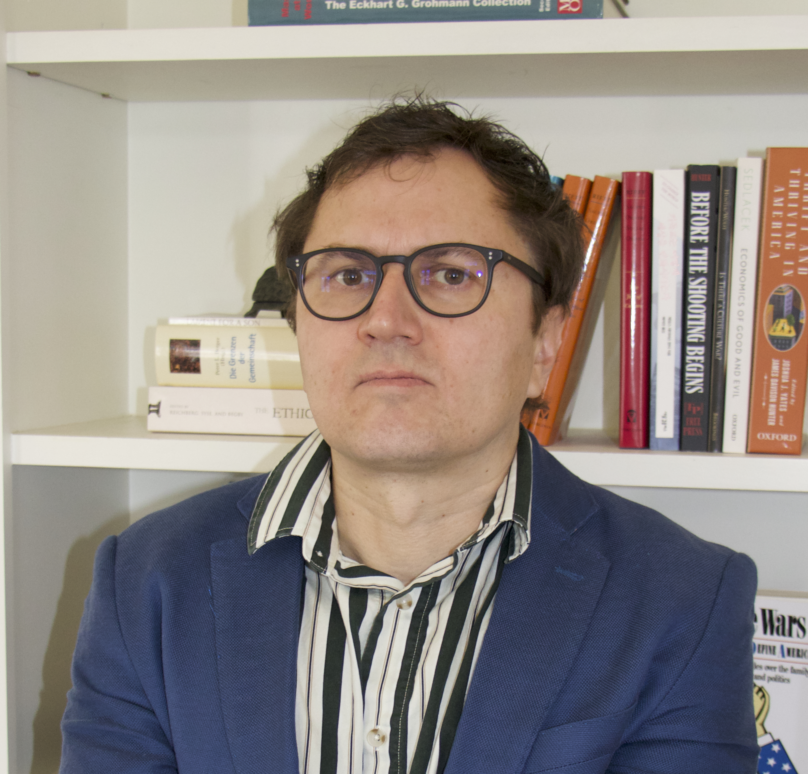

Curriculum Vitae
The complete academic CV is available as a PDF document.
Last updated: February 2026

Personal website of Dr. Dmitry Kurakin, Professor, Social Theorist and Cultural Sociologist
The complete academic CV is available as a PDF document.
Last updated: February 2026